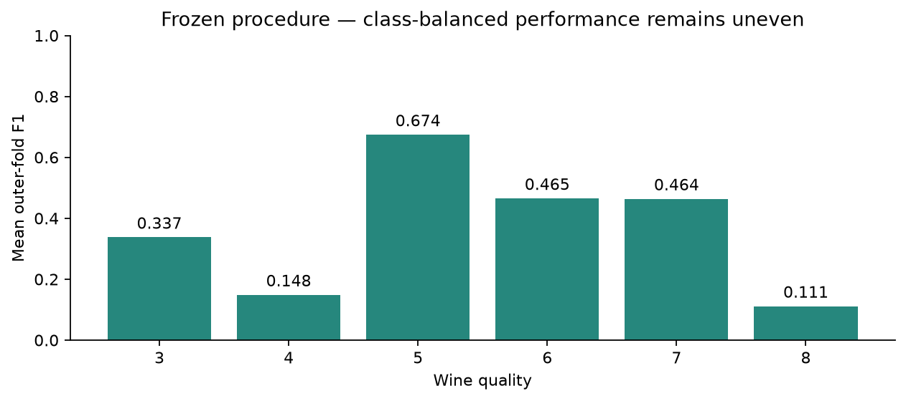

Classification · Evaluation design
Wine quality classification
How do rare classes change the way a classifier should be evaluated?
I investigated six-class wine quality prediction with nested validation, resampling comparisons and an explicit focus on rare-grade performance.
The most useful finding is the uneven class performance. An overall accuracy score can conceal poor recognition of rare grades; macro F1 and per-class evidence make that weakness visible.

The process
How I approached it
-
Protect the evaluation boundary
Used development data for Version 2 and retained the original Version 1 holdout result separately. The old holdout was not used as a new V2 selection set.
-
Keep transformations inside training folds
Compared classifiers and imbalance treatments using four outer folds repeated ten times with three-fold inner CV. Scaling and resampling stay within the appropriate training folds.
-
Inspect performance by grade
Selected an LDA pipeline with gentle capped SMOTE and protected Tomek cleaning, then reviewed macro F1, ordinal metrics, confusion patterns and class-level results.
The evidence
What the results show
Development macro F1: 0.367
The mean outer-fold result did not reach the 0.50 objective. The final fixed recipe has no newly observed independent holdout score.
Rare grades remain a weakness
Mean-fold F1 was 0.148 for quality 4 and 0.111 for quality 8. The 10,870 repeated OOF predictions represent only 1,087 unique development wines.
Reading the results responsibly
Where the evidence stops
There is no new independent V2 holdout result. Repeated model exploration can make development estimates optimistic, synthetic samples do not increase independent sample size, and batch information is unavailable. No external validation or calibrated-probability claim is made.
What I would evaluate next
Collect genuinely new wines with batch information and use an external or group-aware evaluation before making claims about transfer to another population.
Explore the work
The repository includes the V2 model, synthetic examples, the report and its saved evaluation evidence. Raw source data and unsupported legacy model pickles are excluded. Inference and report review do not need the source CSV.
Code, results & methodology